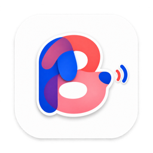
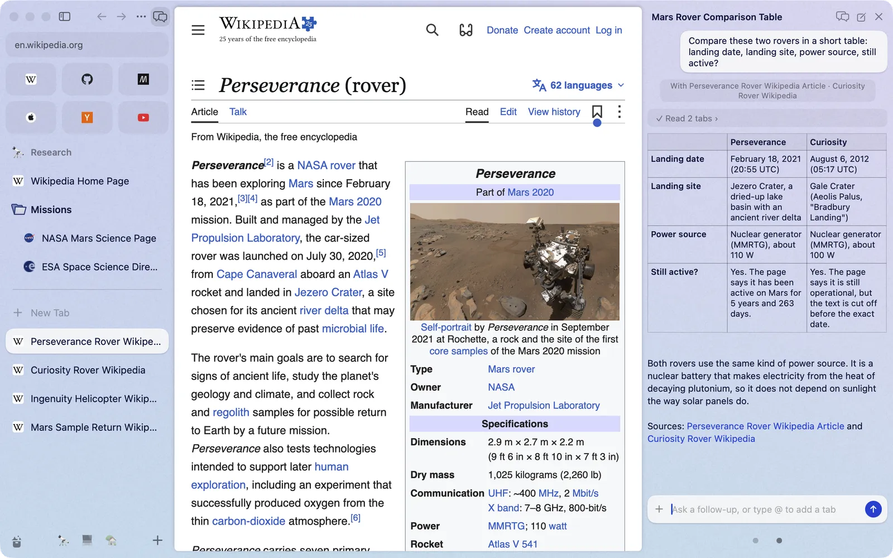

Downloads where you look
A new download flies from your click into the Library button. Rest the pointer on the button to see your four newest downloads and captures, with progress, preview and drag-out.

Brk DownloadEverything you know from Arc is here: the sidebar, Spaces, Favorites, Pinned tabs, split view, Little Arc, Peek, Boosts, the Library and the command bar. Brk rebuilds Arc 1.170 natively for macOS, then adds the things Arc never had.
Downloads a disk image: open it and drag Brk into Applications. Intel Mac? Download for Intel.

1 Basic upgrades
Inspired by Raycast, the command bar does much more than open pages. Type, and the answer is already there. Type a word and press Tab to switch the bar into a mode.

2^10 * 3 15% of 240100 usd in eur time in tokyofile + Tabapp + Tab, or the app's nametranslate + Tabwindow + Tab, or left halfclaude gpt gemini + Tabemoji define color + Tabdark mode new spaceThe ordinary results (open tabs, history, suggestions, top sites) are ranked by a port of Arc's own scoring, so the first row is the one Arc would pick. It learns from you: pages you type often and commands you run rise to the top.
2 Everyday upgrades
A new download flies from your click into the Library button. Rest the pointer on the button to see your four newest downloads and captures, with progress, preview and drag-out.

Back and forward buttons and mouse-driver swipes go back and forward over a page and switch Spaces over the sidebar. ⇧⌘] and ⇧⌘[ step through tabs, and a middle-click on a tab closes it.
3 AI on your Mac

Brk uses the Claude Code or Codex already installed on your Mac, signed in to the Claude or ChatGPT plan you already pay for. No API key and no Brk account.
Naming tabs and groups, tidying Today into groups and spotting duplicate tabs can run on small models on your Mac (Settings › Max › On This Mac). They don't call a large model, cost nothing and keep working offline.
Type what a page was about, not its title, and the command bar finds the tab or the page you visited. The index lives on your Mac.

4 More AI, better than Dia
Open the AI panel with ⌥⌘A, or drag a tab to the right edge of the window. Drag in more tabs, or type @ and part of a tab's name. The agent reads them, compares them, and can open, close, group, move and split tabs for you.


Come back tomorrow and carry on. Rest the pointer on a conversation and the tabs it used light up in the sidebar.

Ask for a price watch or a weekly reading list. The agent builds a page, you save it as a tab, and it refreshes itself on the schedule you pick.

Page text is checked for hidden instructions before an agent sees it, and once a conversation has read a page, every tool the agent wants to run waits for your OK.
5 Arc, pixel for pixel

0.14% of the pixels differ, and the visible one is Arc's update button. Sizes, colours, timings and rules are read from Arc's own app and compared with the real Arc on the same screen. Of the 148 Arc features in the ledger, 124 are verified; the README lists the rest and why.
No. Arc is a trademark of The Browser Company; Brk is an independent project. It rebuilds Arc's design and behaviour from scratch in Swift and does not include Arc's code.
Brk has no account, no analytics and no server of its own. Your tabs, history and settings stay in your Mac's Application Support folder. Like any browser, Brk talks to the sites you open and to your search engine for suggestions. This website, not the app, counts visits and clicks on Download with GoatCounter, which sets no cookies and keeps no personal data.
The small models are downloaded once when you turn them on, then run on your Mac, offline. When you ask the AI something, the tabs and text you give it go to your own agent (Claude Code or Codex), which sends them to Anthropic or OpenAI under your own plan. Nothing goes to Brk.
Macs with Apple silicon and Intel Macs, on macOS 14 Sonoma or later. The Download button picks the one for your Mac; you can also download the Apple silicon or the Intel disk image directly.
Not yet. New builds are published on the release page. To update, download the newest disk image and drag Brk into Applications again, replacing the old copy; your tabs and settings stay. Help › Release Notes in Brk lists what changed in your build.
In Brk, choose Help › Report a Bug… or Help › Send Feedback…. A new tab opens GitHub's form with your Brk version, macOS, Mac and engine filled in. You read and edit everything before you submit; nothing is sent automatically. If Brk crashed, the next launch offers to fill the form from the crash report, and you can turn that off.
You can also use the forms directly: bug report, Brk differs from Arc, idea or feedback. Ask questions in our Discord community or GitHub Discussions. Report security problems through a private report.
Every fix is listed on Bug fixes, newest first, with the first build that has it. Click Subscribe on that page to get a GitHub notification for each new one.
Yes. Brk is open source under the MIT license. The AI features use the Claude or ChatGPT plan you already have, or the free models on your Mac.
Everyone is welcome in the Brk Discord. Get help, share your setup and workflows, or discuss ideas for the browser.
Downloads a disk image: open it and drag Brk into Applications. Intel Mac? Download for Intel.